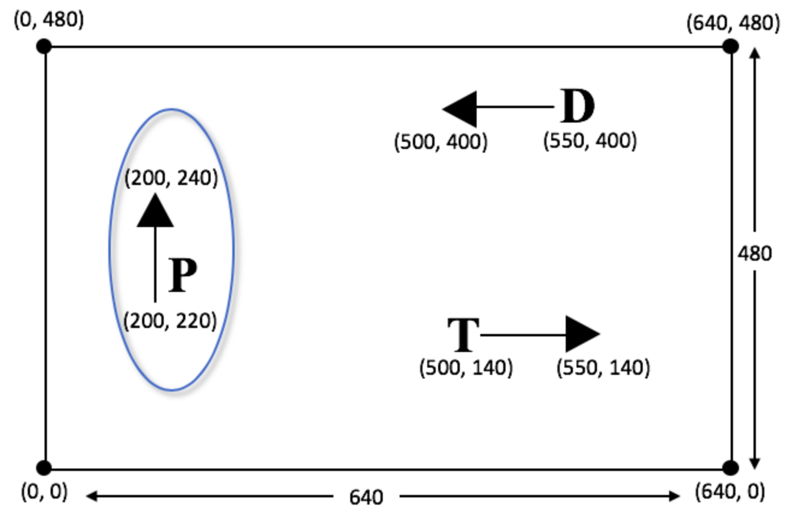

Player Animation
(Also available in Pyret)
Students apply their knowledge of piecewise functions to write a function that will move the player in their game in different directions and at different speeds depending on which key is pressed.
|
Lesson Goals |
Students will be able to:
|
|
Student-Facing Lesson Goals |
|
|
Materials |
|
|
Key Points for the Facilitator |
|
comments-
messages in the code, generally ignored by the computer, to help people interacting with the code understand what it is doing
compound inequality-
an inequality that combines two simple inequalities using and or or
contract-
a statement of the name, domain, and range of a function
debug-
to find and fix errors in one’s code
function-
a relation from a set of inputs to a set of possible outputs, where each input is related to exactly one output
piecewise function-
a function that computes different expressions based on its input
| Defining Piecewise Functions | 30 minutes |
Overview
Students define a piecewise function. This is a challenging task, which is motivated by introducing key events in their video game.
Launch
Have students sign in to WeScheme and open their saved game starter files.
You’ve already defined functions to move your DANGER and TARGET. Take a moment to look at your code or workbook, and refresh your memory on how they work.
-
What controlled the speed of your characters?
-
What controlled the direction of your characters?
If we wanted our PLAYER to go up all the time, we would already know how to do that. If we wanted our PLAYER to go down all the time, we would already know how to do that. But we want the player to go up only when the "up" arrow is pressed, and down only when the "down" arrow is pressed. Do we know how to make a function behave differently, based on its input?
Investigate
Direct students to open their saved Game Project files. Tell them to look for update player. Lead a discussion by posing the following questions.
Strategies for English Language Learners MLR 6 - Three Reads: Have students read through the problem statement three times, looking for different information. What is the problem asking me? What is the contract for this function? What information do I need to create that function? |
-
What is the contract for
update-player?-
The Name is
update-player, the Domain consists of a Number and String, and Range is a Number.
-
-
What does each part of the domain and range represent?
-
Domain: the Number is the y-coordinate of
PLAYER, the String is the key that the user pressed; Range: the Number is the new y-coordinate ofPLAYER.
-
-
How does the y-coordinate of
PLAYERchange when the user presses the "up" key?-
It should increase, the program should add something to it.
-

{kind=link}
-
Complete Word Problem: update-player with a partner, then type your code into your Game Project file and test.
2-D Game Movement If your students have their games working and you are ready to support them in delving into the Posn datatype that will support 2-d movement in the game, the first step is to complete Challenge: Character Movement in Two Dimensions and Challenge: Character Movement in Two Dimensions (continued). Once they’ve gotten their danger moving diagonally, they’re ready to build upon their understanding of Posn and piecewise functions to tackle Challenge: update-player-2. |
Common Misconceptions
-
Students often think of this function as returning a relative distance (e.g. "it adds 20"), instead of an absolute coordinate (e.g. "the new y-coordinate is the old y plus 20")
Synthesize
-
How is this function similar to the piecewise functions you’ve seen before? How is it different?
-
How could we change this function so that the "W" key makes the player go up, instead of the arrow key?
-
How could we change this function so that the "W" key makes the player go up, in addition to the arrow key?
-
Suppose your little brother or sister walks by and hits a random key. What should happen if you hit a random key that doesn’t have a meaning in your function? What happens now?
| Cheat Codes and Customizations | flexible |
Overview
Students choose one or more features to make their game more unique. These features can be quite simple, such as adding another key that does the same thing that "up" or "down" does. But they can also be extremely sophisticated, requiring students to exploit properties of the number line in conjunction with function composition and compound inequalities!
Launch
Right now, all of your games allow the player to move up and down at a constant speed. But what if we wanted to add a special key that made the player warp to the top of the screen, or move down twice as fast? What if we wanted the player to wrap, so going off one side of the screen would make it re-appear on the other?
Investigate
Complete at least one of the Challenges for update-player before turning to your computer to customize your game.
Some possible features students might include are:
-
Warping - program one key to "warp" the player to a set location, such as the center of the screen
-
Boundaries - change
update-playersuch thatPLAYERcannot move off the top or bottom of the screen -
Wrapping - add code to
update-playersuch that whenPLAYERmoves to the top of the screen, it reappears at the bottom, and vice versa -
Hiding - add a key that will make
PLAYERseem to disappear, and reappear when the same key is pressed again
Reminder: Use ; to add comments to code!
Adding useful comments to code is an important part of programming. It lets us leave messages for other programmers, leave notes for ourselves, or "turn off" pieces of code that we don’t want or need to debug later.
Synthesize
Have students share back what they implemented. Sharing solutions is encouraged!
What would it take to make the player move left and right? Why can’t we do this without changing the contract?
Pedagogy Note It’s likely that once they hear other students' ideas, they will want more time to try them out. If time allows, give students additional slices of "hacking time", bringing them back to share each other’s ideas and solutions before sending them off to program some more. This dramatically ramps up the creativity and engagement in the classroom, giving better results than having one long stretch of programming time. |
These materials were developed partly through support of the National Science Foundation,
(awards 1042210, 1535276, 1648684, and 1738598).  Bootstrap by the Bootstrap Community is licensed under a Creative Commons 4.0 Unported License. This license does not grant permission to run training or professional development. Offering training or professional development with materials substantially derived from Bootstrap must be approved in writing by a Bootstrap Director. Permissions beyond the scope of this license, such as to run training, may be available by contacting contact@BootstrapWorld.org.
Bootstrap by the Bootstrap Community is licensed under a Creative Commons 4.0 Unported License. This license does not grant permission to run training or professional development. Offering training or professional development with materials substantially derived from Bootstrap must be approved in writing by a Bootstrap Director. Permissions beyond the scope of this license, such as to run training, may be available by contacting contact@BootstrapWorld.org.